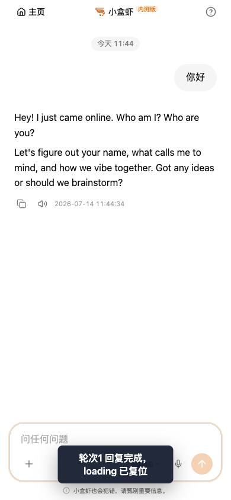
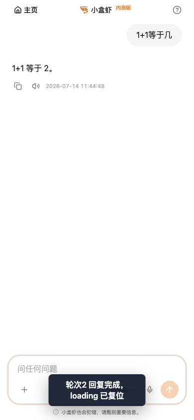

P1 Loading 复位回归
录屏
截图
轮次1 回复后

轮次2 回复后

Proof
{
"url": "http://127.0.0.1:5174/chat",
"runId": "mrk3vw8q",
"authState": {
"fresh": true,
"secondsLeft": 1693
},
"totalRounds": 2,
"rounds": [
{
"message": "你好",
"replyFramesReceived": 17,
"finalStateSeen": false,
"stopInvisibleAfterReply": true,
"composerEditableAfterReply": true,
"stopRemainedInvisible": true,
"sendButtonVisible": true
},
{
"message": "1+1等于几",
"replyFramesReceived": 4,
"finalStateSeen": false,
"stopInvisibleAfterReply": true,
"composerEditableAfterReply": true,
"stopRemainedInvisible": true,
"sendButtonVisible": true
}
],
"allRoundsReset": true,
"pageErrors": [],
"screenshots": {
"轮次1 回复后": "raw/r1-after-reply.jpg",
"轮次2 回复后": "raw/r2-after-reply.jpg"
},
"videos": {
"全过程录屏": {
"original": "raw/page@bbb47f88b7586c647341157237b8334c.webm",
"mobile": "raw/page@bbb47f88b7586c647341157237b8334c.mobile.mp4"
}
}
}